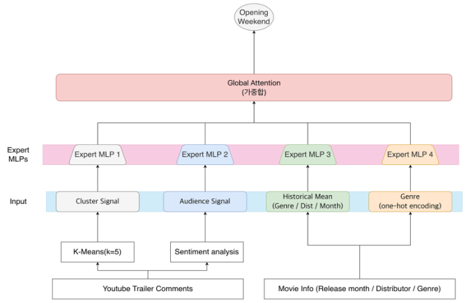
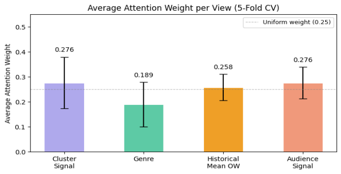

KCC 2026 제출 논문 · 한국컴퓨터종합학술대회Paper submitted to KCC 2026 · Korea Computer Congress
개봉 전에 공개되는 유튜브 트레일러 댓글을 임베딩과 클러스터링으로 잠재 관객의 반응 분포로 정량화하고, 영화 메타데이터와 함께 4개의 독립 뷰로 구성해 북미 개봉 첫 주말 박스오피스를 예측한다.YouTube trailer comments, posted before release, are turned into a distribution of potential-audience reactions through embedding and clustering, then combined with film metadata in four independent views to predict North American opening weekend box office.
기존 예측은 전문가의 주관적 판단이나 개봉 임박 시점의 예매 데이터에 기대고 있어, 선제적 의사결정에 쓰기 어렵다.Existing forecasts rely on expert judgment or on presales data that arrive just before release, which makes them hard to use for decisions made ahead of time.
북미 개봉 첫 주말 실적(OW)은 글로벌 흥행 가능성을 가늠하는 선행 지표로, 업계는 여기에 장르별·시장별 흥행 배수를 적용해 글로벌 누적 수익을 추산한다. 그러나 전문가 판단은 예측자에 따라 편차가 크고 재현성이 낮으며, 사전 예매 기반 추정은 개봉 임박 시점에서야 의미 있는 신호를 얻어 편성 조정이나 마케팅 전략 재수립 같은 선제적 대응이 어렵다. 반면 유튜브 공식 트레일러는 통상 개봉 1~3개월 전에 공개되고, 그 댓글은 사전 예매 개시와 평론가 시사 이전에 확보할 수 있는 잠재 관객의 자발적 선행 신호다.North American opening weekend (OW) is a leading indicator of a film’s global potential; the industry applies genre- and market-specific multipliers to it to estimate worldwide totals. Expert judgment, however, varies widely between forecasters and is hard to reproduce, and presales-based estimates only produce a meaningful signal close to release, leaving little room to adjust scheduling or marketing. Official YouTube trailers, by contrast, typically go live one to three months before release, and their comments are a voluntary leading signal from potential audiences, available before presales open and before critics’ screenings.
트레일러 댓글 임베딩과 영화 메타데이터를 4개의 독립 뷰로 나누고, 뷰별 Expert MLP의 예측값을 어텐션 기반 동적 가중치로 합친다.Trailer-comment embeddings and film metadata are split into four independent views; the predictions of per-view Expert MLPs are combined with attention-based dynamic weights.
뷰마다 정보 원천과 피처의 의미가 다르므로 각자 독립적인 학습 경로로 처리하고, 어텐션이 영화 특성에 따라 각 뷰의 기여도를 조정한다.Because the views differ in source and meaning, each follows its own learning path, and attention adjusts each view’s contribution to the film at hand.
| View | 변수Variable | 차원Dims | 설명Description |
|---|---|---|---|
| View 1 | Cluster Signal | 5 | 댓글 임베딩의 클러스터 소속 확률 분포distribution of comment-embedding cluster memberships |
| View 2 | Audience Signal | 4 | 전체 댓글 수, 긍정·부정·중립 댓글 수total comments; positive, negative, neutral counts |
| View 3 | Historical Mean OW | 3 | 장르·배급사·개봉월별 평균 OWmean OW by genre, distributor, release month |
| View 4 | Genre | 8 | 장르 카테고리 (원-핫 인코딩)genre category (one-hot) |

유튜브 공식 트레일러 댓글을 OpenAI text-embedding-3-small로 1,536차원 벡터로 바꾸고 L2 정규화한 뒤, MiniBatchKMeans(K=5)로 전체 데이터에 대한 글로벌 클러스터링을 수행한다. 각 댓글 임베딩 ei와 클러스터 센터 ck의 코사인 유사도에 Softmax를 적용해 5개 클러스터에 대한 연속형 소속 확률을 만든다.Comments on the official YouTube trailer are embedded into 1,536 dimensions with OpenAI text-embedding-3-small, L2-normalised, and clustered globally over the full data with MiniBatchKMeans (K=5). A softmax over the cosine similarity between each comment embedding ei and each centre ck gives continuous membership probabilities over the five clusters.
영화 단위의 Cluster Signal v1 ∈ ℝ5는 그 영화의 댓글 집합 Cm에 대한 확률 벡터의 평균이다.The film-level Cluster Signal v1 ∈ ℝ5 is the mean probability vector over the film’s comment set Cm.
하드 군집 레이블 대신 각 클러스터에 대한 연속형 소속 확률을 피처로 써서, 잠재 관객의 반응 유형 분포를 정보 손실 없이 정량화한다.Using continuous memberships instead of hard cluster labels quantifies the mix of potential-audience reaction types without discarding information.
네 뷰는 각자 독립적인 Expert MLP를 거쳐 OW 예측값을 하나씩 낸다. 어텐션 네트워크는 특정 뷰가 아니라 전체 입력 x = [v1; v2; v3; v4]를 조건으로 Linear → ReLU → Dropout → Linear 구조에서 4개의 로짓을 만들고, Softmax로 정규화한다.Each view passes through its own Expert MLP and yields one OW prediction. The attention network conditions on the full input x = [v1; v2; v3; v4] rather than any single view, produces four logits through Linear → ReLU → Dropout → Linear, and normalises them with a softmax.
wk ≥ 0이고 합은 1이다. 가중치는 영화마다 다르게 산출되므로, 예컨대 대형 프랜차이즈 영화에서는 Historical Mean OW의 가중치가, 신규 IP 영화에서는 Cluster Signal과 Audience Signal의 가중치가 상대적으로 높아지는 식으로 조정된다.wk ≥ 0 and the weights sum to 1. Because they are computed per film, a large franchise title can lean on Historical Mean OW while a new IP leans relatively more on Cluster Signal and Audience Signal.
2022~2025년 북미 개봉작 중 트레일러 기반 사전 관심도 분석이 가능한 135편.135 North American releases from 2022–2025 for which trailer-based pre-release interest can be analysed.
| 구분Split | 편수Films |
|---|---|
| 학습 데이터Training | 106 |
| 검증 데이터Validation | 29 |
| 합계Total | 135 |
공개 직후는 잠재 관객의 자발적·즉각적 반응이 집중되는 구간이다. 이후에는 개봉일이 다가오며 홍보성·중복성 댓글이 늘어 순수한 사전 관심도 신호가 희석된다.The days right after release are when potential audiences react spontaneously. Later, as the release date approaches, promotional and duplicate comments increase and dilute the pure pre-release interest signal.
같은 피처셋과 학습 조건에서 Stratified 5-Fold 교차검증으로 평가했다. 제안 모델이 모든 비교 모델보다 RMSE와 MAPE가 낮았다.All models were evaluated with stratified five-fold cross-validation on the same features and training setup. The proposed model had the lowest RMSE and MAPE of all.
| 모델Model | RMSE | MAPE |
|---|---|---|
| SVR | $29.90M | 59.2% |
| Random Forest | $29.01M | 51.0% |
| MLP | $27.63M | 45.2% |
| MvFS (제안)(ours) | $23.65M | 40.9% |
단일 MLP와 비교하면 RMSE가 약 399만 달러, MAPE가 4.3%p 낮다. 피처 집합 간 이질성을 뷰로 분리하고 어텐션으로 동적으로 합치는 구조가 유효하다는 뜻이다.Against a single MLP, RMSE is about $3.99M lower and MAPE 4.3pp lower — evidence that separating heterogeneous feature sets into views and fusing them dynamically with attention pays off.

Cluster Signal(0.276)과 Audience Signal(0.276)이 가장 높고, Historical Mean OW(0.258)가 뒤를 잇는다. Genre(0.189)는 상대적으로 낮다. 유튜브 트레일러 댓글 기반의 잠재 관객 반응 신호가 장르 카테고리 정보보다 예측에 더 크게 기여한다는 뜻이다.Cluster Signal (0.276) and Audience Signal (0.276) are tied for the highest weight, followed by Historical Mean OW (0.258); Genre (0.189) is lower. Signals of potential-audience reaction from trailer comments contribute more to the forecast than genre categories.
각 영화에서 가장 큰 가중치를 받은 뷰. 점선은 균등 가중치 0.25.The highest-weighted view for each film. Dashed line: uniform weight 0.25.
영화별로 주요 뷰가 다르게 나타난 결과는 MvFS의 동적 가중치 구조가 영화 특성에 따라 각 뷰의 기여도를 유연하게 조정한다는 것을 보여 준다.That the leading view changes from film to film shows the dynamic weighting adapting each view’s contribution to the film’s characteristics.
제안 모델은 RMSE 2,365만 달러, MAPE 40.9%로 모든 비교 모델보다 우수했다.The proposed model reached an RMSE of $23.65M and a MAPE of 40.9%, ahead of every baseline.
향후 연구로는 트레일러 영상의 시각적 피처를 독립 뷰로 추가하는 멀티모달 확장을 제안했다.As future work, the paper proposed a multimodal extension that adds trailer visual features as an independent view.
이후 석사 학위논문으로 확장Extended in the master’s thesis
| KCC 2026 | 석사 학위논문Master’s thesis | |
|---|---|---|
| 대상 작품Films | 135편 (2022~2025)135 (2022–2025) | 217편 (2021.3~2026.6)217 (Mar 2021–Jun 2026) |
| 뷰 구성Views | 4-View | 6-View (+ Summary Embedding, Trailer Visual)6-View (+ Summary Embedding, Trailer Visual) |
| Historical Mean OW | 3차원3-d | 4차원 (+ 프랜차이즈 전작 OW)4-d (+ previous franchise OW) |
| Genre | 원-핫 8차원one-hot, 8-d | 멀티핫 11차원multi-hot, 11-d |
| 평가Evaluation | Stratified 5-Fold CV | 시간 기준 분할 (학습 195 · 평가 22) + 5-Fold CVtemporal split (195 train · 22 test) + 5-fold CV |
KCC 논문이 향후 연구로 제안한 트레일러 시각 피처는 학위논문에서 Trailer Visual 뷰로 추가되었다. 표본과 평가 방식이 달라 두 논문의 수치는 직접 비교할 수 없다. 석사 학위논문 보기 →The trailer visual features proposed here as future work became the Trailer Visual view in the thesis. Samples and evaluation differ, so the two papers’ numbers are not directly comparable. See the master’s thesis →